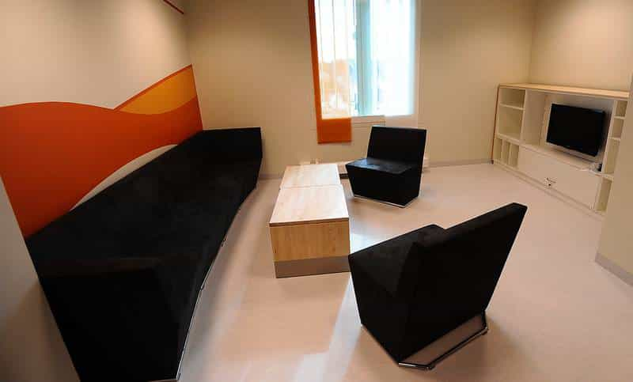
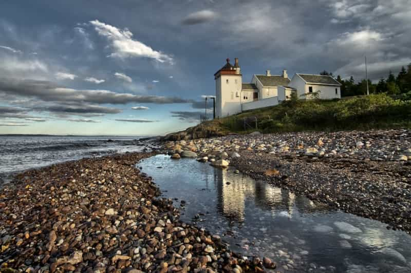

Most men who read Return Of Kings would probably agree that the Western world is in terminal decline. As time goes on and things get worse, economic options will disappear. Despite their best efforts, many men who have played by the rules will find they have little opportunity to build a better future.
Turning to a life of crime is one possible solution for those with nothing left to lose. But, not all nations are equal when it comes to criminal law, women, and living standards. Men living in fascist police states might find it useful to move to a more crime-friendly nation. Let’s explore some of the best countries for men to pursue criminality.
I judged each country based on the following six criteria:
Here is a list of the five good countries to begin a criminal career:
Sweden is wealthy, full of hot women, and friendly towards immigrants. It has very weak laws and cushy prisons. Guns are restricted, but freezing to death is a danger.
Swedish Prison. Like an Ikea store.

Norway also has hot women and a very liberal attitude towards immigrants. This country has extremely weak criminal laws and some of the nicest prisons on the planet. Guns laws are very restrictive.
Norwegian Prison. Ocean views.

Canada is not exactly ideal, but it is lenient on its criminal immigrants. Stronger gun laws make it easier to find compliant victims. Quebec would be the best province to settle in, as it offers very attractive women. Canada is the best choice for criminals who want to stay in North America.
Quebec Jail. Not inviting, but not too bad.
Austria has relatively attractive women and a strong economy. But Austria is very attractive due to weak criminal laws and amazing prisons. Neo-Nazis could make it dangerous for recent immigrants.
Austrian Prison. This is nicer than my house.
The Czech Republic is relatively wealthy and boasts attractive women. The Czechs are very lenient on crime, but their prisons are no joke. This country has weak gun laws. Citizens can lawfully carry concealed weapons, so be careful.
Czech Prison. Not quite as nice.
Any one of these countries would be a strong choice for the man determined to commence his criminal career, and notice how they are mostly in Europe. Your plan to be a Colombian drug mule? You may want to scratch that.
Read More: Will The Norwegian People Disappear?